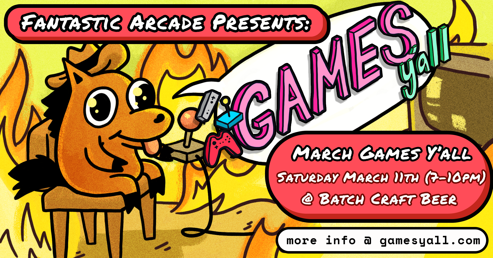
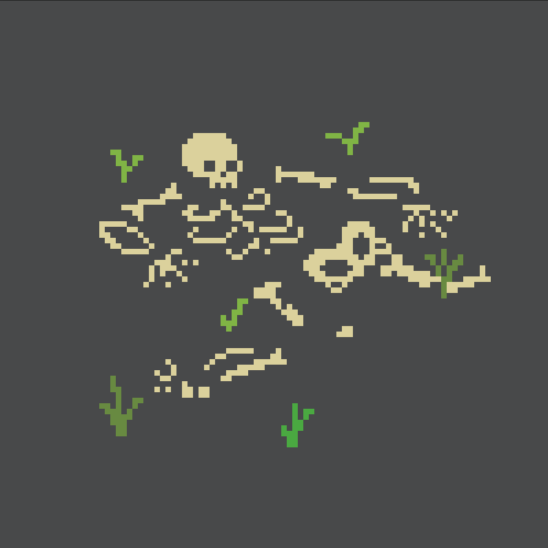
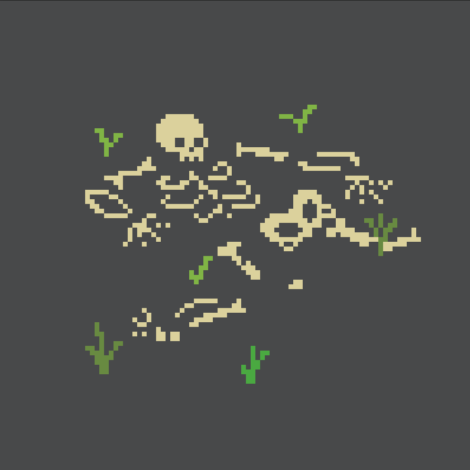
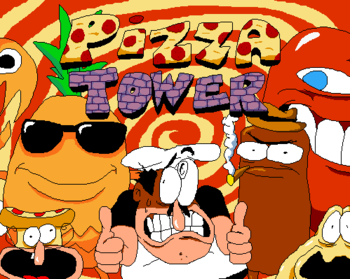

-

Warmth approaches! We're back with our ol' friends at Batch Craft Beer for our 3rd meetup of the year. We've got an excellent selection of games along with a showcase of local musicians. Got some games industry friends visiting from out of town? Bring em along!
üé∂Music üé∂
exodrifter
Emily E. Meo
DJ ROCKMAN
Retr05pectGames Y'all + Fantastic Arcade
Games Y’all is a meetup presented by Fantastic Arcade & The Museum of Human Achievement, held every month at venues around Austin for indie devs, digital artists, and games fans.
Fantastic Arcade celebrates, amplifies, and supports the unique and underrepresented within indie games and beyond.Games This Month

Solastalgia
Solastalgia is a short interactive visual poem about loss, longing, and dislocation. The word solastalgia was coined by philosopher Glenn Albrecht in his 2003 paper Solastalgia: A new concept in human health and identity. It describes it as the pain experienced when there is recognition that the place where one resides and that one loves is under immediate assault. It is manifested in an attack on one’s sense of place, in the erosion of the sense of belonging to a particular place and a feeling of distress about its transformation.
Content warning: Flashing lights, sudden loud noises
Designed and developed by Farfama. Written by Sivani.Developer: Farfama Hargaaya
@farfama
 
Memento Mori
Memento Mori is a short Twine piece focused on facing your own mortality.
It begins by asking the details of your ideal death, and proceeds on to details of how you hope your corpse is handled. Memento Mori also includes links to various educational resources for the death-positive movement and how to get involved in preparing for the inevitable.Developer: Molly Thompson
@mofthomp

Vessels
Quarantined inside an airlock. No memories. No way out. The remaining crew thinks there’s something wrong with you, but the Voice says it’ll help you escape. Navigate volatile conversations & unravel mysteries in this narrative adventure about trust, self-destruction, & shifting identities.
Vessels is an IGF award winning 2-3 hour, character-driven story, in which no one is exactly who they appear to be… even you. With the help of the enigmatic Voice, rewind time and control the other crew members to explore, manipulate, and gain control. Experience atmospheric, environmental storytelling as you piece together clues on a ship reeling from a grisly death and spreading paranoia. Made by a team local Austin game devs -- the Local Space Survey Corps!Developer: Local Space Survey Corps
@VesselsGame

ControllerType
This is a simple prototype for an alternate way of typing using a gamepad without using an on-screen keyboard. It's designed similar to a radial menu, with the four primary buttons (ABXY) each housing a different menu containing 8 letters. The user selects the letter they wish to type from the menu using the joystick. ControllerType is an alternative, faster way of typing using a gamepad that avoids an onscreen keyboard, instead opting to use a radial menu. While this is mainly just a prototype, there are a variety of options included to help make this method of typing as approachable as possible (as well as a few other surprises hidden inside).
Developer: Conner Arrington
@EraserLark

Tuck & Rolo
Tuck and Rolo is a spooky arcade platformer developed for the PICO-8 "fantasy console". Throw your boney body at enemies or fling fireballs from afar. Make good use of your shield as you traverse the dangers of the game’s one long level. Should you succeed, go for the high score in the repeatable NG+ mode. But only the truly adventurous will find all 9 Secret Shrooms!
Walt Mitchell is an Austin-based webdev turned gamedev. He designed, developed, and made the art for Tuck and Rolo. The music was composed by D.D Curry.
Lexaloffle’s PICO-8 features 16 colors, 128x128 resolution, 4 channel sound and other limitations that “are carefully chosen to be fun to work with, to encourage small but expressive designs, and to give cartridges made with PICO-8 their own particular look and feel.” The PICO-8 app includes tools for making sprites, maps, and SFX. Learn more on lexaloffle.com.Developer: Walt Mitchell
@CoffeeSandwhich
Pizza Tower
Pizza Tower is a fast paced 2D platformer inspired by the Wario Land series, with an emphasis on movement, exploration and score attack. Featuring highly stylized pixel art inspired by the cartoons from the '90s, and a highly energetic soundtrack.
Developer: Tour de Pizza
@pizzatowergame

href.place
Vidya Giri is fond of sketching natural landscapes and exchanging links. With href.place she combines these passions to collect and share the various lands of the internet as illustrated postcards.
Sign up by March 12th to receive a hyperlink postcard in the physical mail! Vidya will recommend and draw an illustration of a website for you based on your interests. You can also recommend sites for Vidya to check out, which she will illustrate postcards for as well. All postcards will be shared on the website once the project is complete.
Vidya Giri is an artist from Houston, TX. Her art is reflective of her background: balanced between cultures, environments, and disciplines. Her work spans online spaces, printed media, projection, and painting on physical and digital canvases. Her (current) explorations revolve around collecting from one's surroundings as a form of reflection and the parallels between natural and human-made identities and the environments they encompass.Artist: Vidya Giri
@vidgiri


Line Wobbler
Line Wobbler is a one-dimensional dungeon crawler game with a custom controller made out of a door-stopper spring and a five meter long LED strip display. It is an experiment in minimalism in game design, use of novel input mechanics, retro sound, and the incorporation of physical space into the game.
Robin is an experimental hardware game developer and interactive installation artist based in Berlin, Germany. His works range from award-winning one-dimensional hardware games, over weird wobbly spheres, to walls full of door stopper springs that visualise quantum physics in a playful yet scientifically accurate manner.Developer: Robin Baumgarten
@Robin_B
Gallery


Join the Community


Website created by Noah V. Carrico